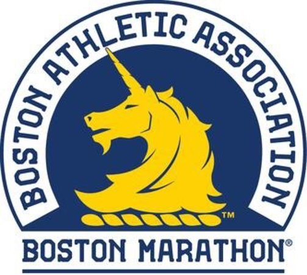
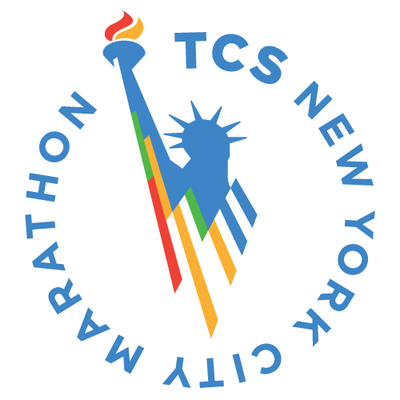
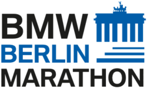
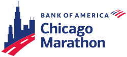
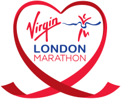
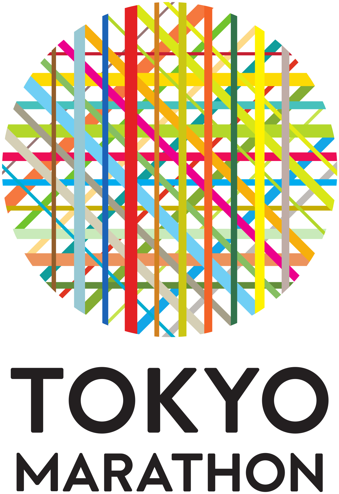

Maratona de Boston

A Maratona de Boston é a maratona mais antiga do mundo. Ela acontece desde 1897 todo ano sem nenhuma interrupção. Seu percurso já sofreu algumas alterações com o passar das edições, mas a maior parte continua a mesma.
Atualmente, a prova começa em Hopkinton, uma pequena cidade de Massachusetts, e vai até a histórica Boylston Street. É uma maratona que carrega bastante história: foi lá, por exemplo, que aconteceu a primeira participação de uma mulher em uma maratona.
A prova acontece todo ano no Patriot’s day, um feriado que cai sempre na terceira segunda-feira de abril.
Saiba mais...
Maratona de Nova York

A primeira edição da Maratona de Nova York aconteceu em 1970 com 127 participantes, sendo que deles, apenas 55 terminaram. Seu percurso consistia em dar voltas no Central Park. Hoje ela é considerada a maior corrida de rua do mundo.
O percurso da Maratona de Nova York começa na Staten Island e termina em Manhattan. Ao longo de todo o trajeto, mais de 1 milhão de pessoas ficam esperando para ver os corredores.
Saiba mais...
Maratona de Berlim

Alguns recordes mundiais aconteceram na Maratona de Berlim. Um deles foi quebrado pelo queniano Eliud Kipchoge em 2018, quando ele completou a prova em 2:01:39. Não só este recorde, mas outros grandes recordes mundiais também foram conquistados nessa Major.
A Maratona de Berlim é corrida uma internacional que teve início em 1974. Mas foi com a queda do muro de Berlim e com a reunificação que o percurso da Maratona de Berlim começou a passar pelo Portão de Brandenburgo e pelas duas partes de Berlim.
Saiba mais...
Maratona de Chicago

Mais de 40 mil atletas percorrem 29 bairros diferentes da cidade de Chicago na Maratona de Chicago.
Essa Major teve início em 1977 e desde então já recebeu corredores mais rápidos do mundo, sendo palco de recordes mundiais, como:
- Steve Jones: 2:08:05, em 1984
- Khalid Khannouchi: 2:05: 42, em 1999
- Catherine Ndereba: 2:18:47, em 2001
- Paula Radcliffe: 2:17:18, em 2002
Saiba mais...
Maratona de Londres

Desde 1981 a Maratona de Londres vem crescendo cada vez mais. Atualmente ela recebe cerca de 39 mil atletas e acontece sempre no último domingo de abril.
Entre as Majors possui um grau de dificuldade médio, porque ela pode ter muitos participantes e também há muitas curvas de 90 graus em seu percurso, o que a torna um pouco mais técnica.
Saber quais são as maratonas Majors também ajuda a programar as férias de muitas pessoas. Correr essa prova, por exemplo, é uma ótima oportunidade de também passar por várias atrações de Londres como o Big Ben e a Tower Bridge.
Saiba mais...
Maratona de Tóquio

A Maratona de Tóquio é a mais nova maratona entre as Majors, seu primeiro ano foi em 2007. Em seu início ela recebeu pouco mais de 30 mil participantes e já cresceu para quase 36 mil participantes.
Saiba mais...